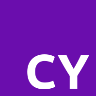

About Cyonix
Cyonix is a lightweight markup language inspired by Markdown, designed to be easy to read and write while offering powerful features for content formatting.
Key Features
- Simple syntax
- Extensible with plugins
- Supports HTML embedding
- Designed for both web and documentation purposes
Examples and Tutorials
Explore some examples and tutorials to get started with Cyonix: